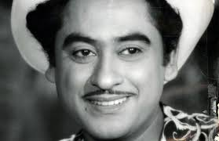

Kishore Kumar

Abhas Kumar Ganguly was born in Khandwa, now in Madhya Pradesh.Indian film playback singer, actor, lyricist, composer, producer, director, and screenwriter.
He is considered one of the most successful playback singers of the Hindi film industry.
Music director S. D. Burman is credited with spotting Kumar's talent for singing.
In the 1970s and 1980s, Kumar sang for Rajesh Khanna, Amitabh Bachchan, Dharmendra, Jeetendra, Sanjeev Kumar, Dev Anand, Shashi Kapoor, Mithun Chakraborty, Vinod Khanna, Dilip Kumar, Randhir Kapoor, Rishi Kapoor, Rajiv Kapoor, Aditya Pancholi, Naseeruddin Shah, Sanjay Dutt, Sunny Deol,
Anil Kapoor, Rakesh Roshan, Pran, Sachin, Vinod Mehra, Rajini Kanth, Chunky Pandey, Kumar Gaurav, Govinda and Jackie Shroff.